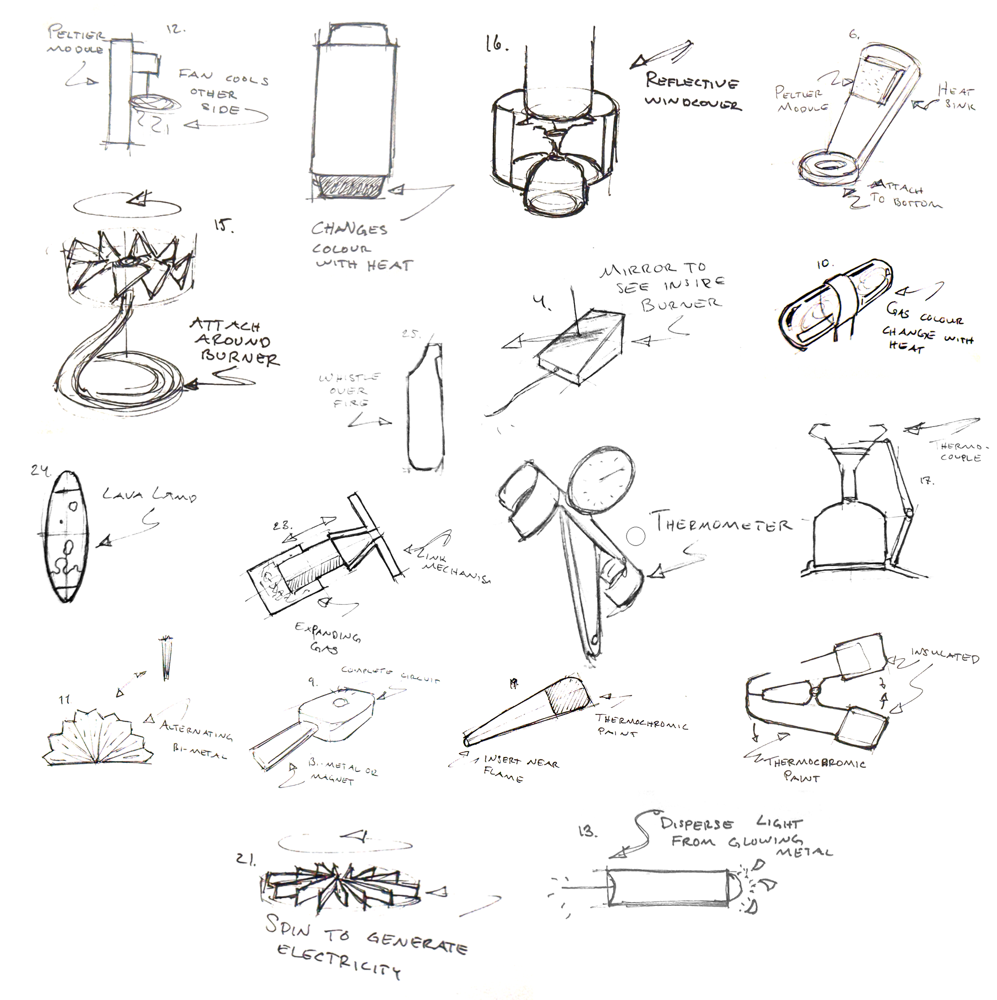

Pre-studies & market analysis
Comprehensive pre-studies were conducted to explore material properties and manufacturing methods. Early technical evaluations determined that heat from the flame was the only reliable source for flame detection. To map the competitive landscape, we analyzed market positioning, studied existing patents, visited retail stores, and performed a deep dive into the semiotics of indicator design.
User research and insights
To anchor the project in user-centered design, user studies were performed to map stove usage, identify market favorites, and pinpoint critical user pain points. This research was synthesized into stakeholder maps, customer journey maps, and a structured Quality Function Deployment (QFD) to establish the project's core requirements.
